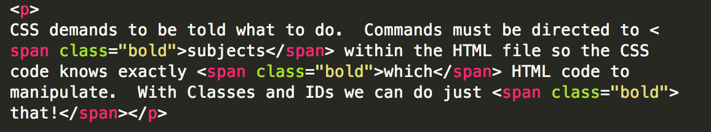
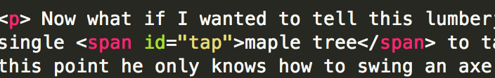

CSS demands to be told what to do. Commands must be directed to subjects within the HTML file so the CSS code knows exactly which HTML code to manipulate. With Classes and IDs we can do just that!
Think of CSS as a series of tools (many tools). For our purposes lets imagine a tool - say an axe. If you have an able bodied lumberjack at your disposal at the edge of a forest, and you put an axe in his hand and tell him to start chopping shit, the results will be undesireable unless you are aiming for anarchical tree destruction.
Lets say for example you are interested in chopping down only the cherry trees in the forest to cut up and refine into cutting boards for christmas gifts - you would need to identify each of the cherry trees to this able-bodied lumberjack so he knows which trees to apply the axe and take down. As such this lumberjack under your employ must be directed to this class of trees - in this case all of the cherry trees. A class is a series of elements that need to be 'treated' the same was by the CSS code the way a lumberjack would need to treat a series of cherry trees.
In the paragraph above I commanded my CSS file to make 3 different words bold by identifying all 3 words in the underlying HTML file the the class: "bold" - see below:

Now what if I wanted to tell this lumberjack to cut down a single maple tree to tap for maple syrup? To this point he only knows how to swing an axe at a marked cherry tree - or a class of 'to be chopped cherry trees' - but what if I want him to tap a single maple tree for sap rather than cut it down? To this end, I would identify a single
maple tree for the lumberjack to tap for sap to be boiled into maple syrup.In the paragraph directly above this one, I commanded my CSS file to make the first iteration of "maple syrup" red and bold by identifying this single term in the underlying HTML file as: "tap" - see below:

AS SUCH, in much the same way a simple lumberjack would need individual jobs, like tapping a single maple tree, or broad jobs, like cutting down every cherry tree - CSS needs to be directed to act on single instances or classes of multiple elements with specificity, lest all trees get chopped and tapped in anarchical fashion.
Happy Holidays Y'all - see you in a few!